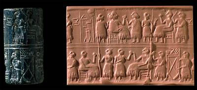

The Challenge -
Seal

This seal dates to around 2600 B.C. It was found by Leonard Woolley beside the body of a woman buried in one of the main Royal Graves at Ur. The cuneiform signs on it read ‘Pu-abi, queen'. The scene of a party or banquet is often found on seals of this time. A similar scene is shown on the Standard of Ur found in another Royal Grave.
To learn more about the Royal Graves visit Tombs Explore.
|
|